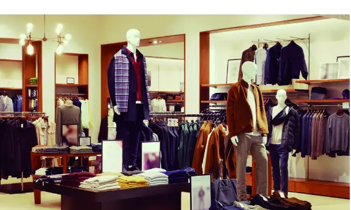
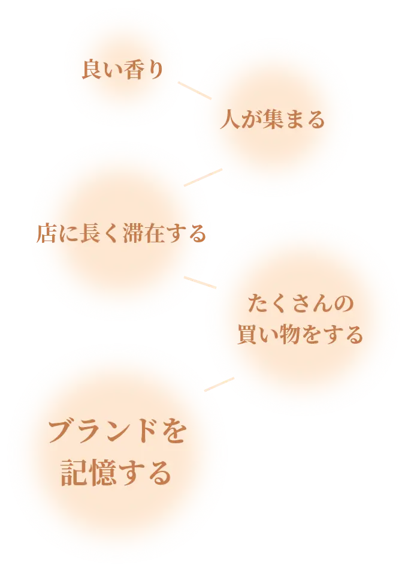
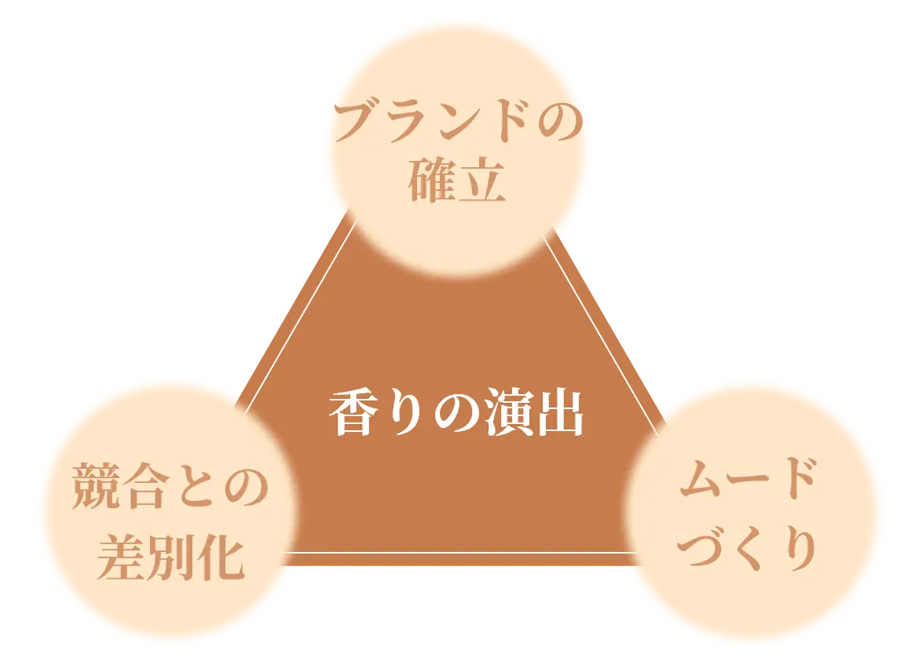

香りマーケティング
―嗅覚を通して感情に訴える
マーケティング

SCENT BRANDING
昨今の過酷なビジネス競争環境では、顧客の記憶に残る体験や感情のつながりを生むことが長期的なブランドの信頼にとって最も重要なことです。
香りによるブランディングとは、単に心地よい香りで空間を満たすだけではありません。企業のブランド・アイデンティティを確立したり、消費者にインパクトのあるメッセージを伝えたり、より訴求力を高めたりする、一種のアートなのです。
香りを取り入れることで、ブランドとお客様のつながりはより深まり、商品価値が一層高く感じられ、店内での滞在時間も自然と長くなり、結果として売上の向上にもつながります。
そして一度その香りが「お店での心地よい記憶」と結びつけば、お客様はまた訪れたくなり、リピーターとして戻ってきてくださるのです。
香りの力で、
忘れられないブランドへ

米国嗅覚研究所の調査によると、香りによる独自の“ロゴ”を用意したブランドは、記憶される確率が65%といわれています。
それに比べ、香りのないブランドは 3カ月以内に忘れられてしまう確率が50% だそうです。

学術&業界研究機関によると、香りはブランドが与える印象に大きな影響を与えます。
適度で心地よい香りに満たされたショップは
ゲストが店内をゆっくりと見てまわるなど、より長い時間滞在します。
また、香りに誘われた人が店内に入ってくるなどの誘客効果もあります。
北京にあるスポーツブランドのショップで、
あるコンサルティング会社が中国人買い物客に「感覚に訴える」
ショップ体験を通して
アメリカのブランドを紹介しました。
店内を懐かしい木の香りや革の香りで演出し、ブランドの伝統と職人技を伝えたのです。
買い物客は、同じ規模の他店で買い物した時に比べて二倍の金額を使い、より長く店に滞在しました。
香りの演出を
取り入れるメリット

ブランドに合った香りで演出することで、
ブランドの確立、ゲストや従業員のための最適な環境やムードづくり、
そして競合企業との差別化にもつながります。